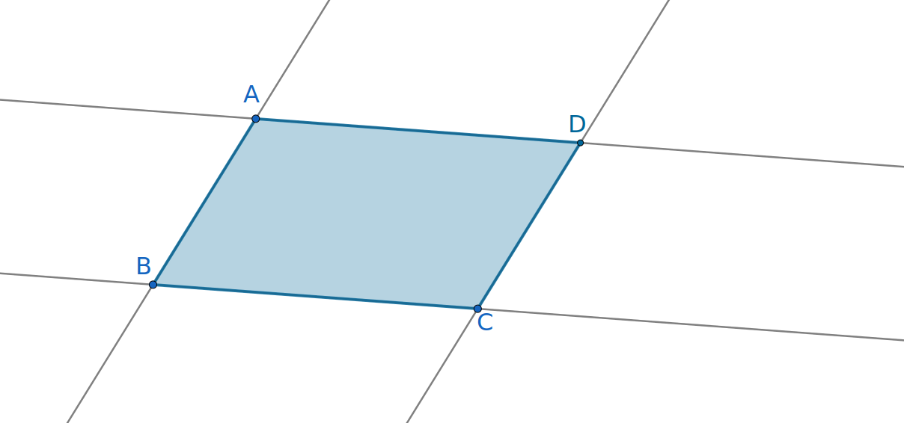
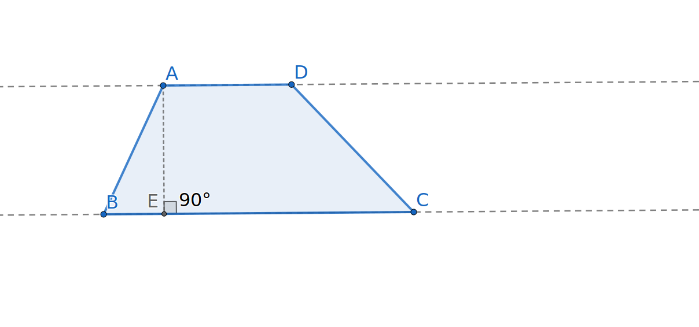

Throughout our learning, and in fact throughout our lives, we add knowledge to our toolkit that we can later reference as needed. The tools in our toolkit can then be used to solve problems, to further build our understanding of related concepts, and to support the validity of an argument. Most likely, you are already familiar with some of these tools from previous coursework. You know how to perform computations, have used geometric formulas, and can recognize many shapes.
Although you already know some of the facts and formulas, we will develop a toolbox from the ground up in this course, starting with basic principles and assumptions that are intuitively obvious. With geometric formulas and theorems, we will want to explore why these are true before adding them to our toolbox. When we need to assume a statement without proving it, we will acknowledge the assumption and identify it as a principle rather than a theorem. Theorems will be justified logically from the principles and previously proved theorems. Definitions are developed to give us helpful terminology and state the characteristics needed to identify the object. We typically do not include every property of an object in the definition; some properties can be proved from the initial definition. For example, we define a rectangle to be a quadrilateral with four right angles. The property that opposite sides of a rectangle are congruent is not included in the definition because it can be proved from the definition.
Depending on the level of a geometry textbook and the author’s goals, you will see some differences between the statements of geometric definitions and principles (also called axioms). For this reason, a proof you find elsewhere may not be sufficient here due to its reliance on different assumptions. Students are encouraged to use the resources in this text for their work. In addition, you should be mindful of the order in which theorems are introduced as you cannot use a theorem that comes later in the textbook as an argument in a proof. On the other hand, this textbook is not as rigorous as some geometry textbooks. In order to maintain the exploratory and intuitive nature of this book, the author will include some principles here that might appear as proven theorems in other texts. At times, proofs may be included as exercises leaving the choice of rigor up to the course instructor.
Our course toolbox currently contains the definition of area 1.1.1 and two principles, [cross-reference to target(s) "principle-arearect" missing or not unique] and Principle 1.1.3. In other words, we can think about the area of a region as the number of \(1\times1\) blocks that fill the interior, we can use the area formula for a rectangle, and we know that the area of a region is equal to the sum of the area of its parts. Hopefully, you will agree that length should also be additive; namely, that if we extend a segment of length \(n\) by a segment of length \(m\text{,}\) the resulting segment has length \(n+m\text{.}\) We restate this below:
Principle1.2.1.Additivity of Length.
Suppose that \(C\) is a point on the interior of line segment \(\overline{AB}\text{,}\) then the length of \(\overline{AB}\) equals the sum of the lengths of \(\overline{AC}\) and \(\overline{CB}\text{.}\)
Since we are most interested in discovering facts and formulas that will hold for a whole class of geometric shapes, we will often use variables to represent numerical quantities such as length, area, and angle measure. We include in our toolbox the algebraic rules and procedures in A.2 that allow us to perform calculations, simplify expressions, and solve equations. There is a section A in this book’s appendix (back matter) on algebra for your review and reference.
Eventually, we will add more tools to our collection including the Pythagorean Theorem, area formulas for other shapes, and other geometrical theorems and formulas. The reasons behind these will be explored in future sections and based on definitions and the initial principles.
As we encounter and state new definitions, these too will be added to our toolbox. As you work through the next exploration, you will encounter terms like trapezoid and isosceles. Definitions for these and other terms are provided at the end of this section in case you would like to refresh your memory. You can also use the index or textbook’s search tool to find definitions.
Exploration1.2.1.Explorations with Tangrams.
In this exploration, use the tools currently in our toolbox as you answer the questions. You may find yourself wanting to use the Pythagorean Theorem and the area formula for a triangle, but you are encouraged to try to answer the questions without these formulas. In fact, if you find yourself using the Pythagorean Theorem, there is probably an easier method!
A set of tangrams consists of the following seven pieces: two large triangles, one medium triangle, a parallelogram, a square, and two small triangles.
Figure1.2.2.The Seven Tangrams
To complete this exploration, you will need to move the seven tangram pieces around. If you do not have a set of tangrams, you may print and cut out the shapes shown above. A tangram interactive is also available on Polypad by Amplify via the link Interactive Tangrams on Polypad by Amplify 1
mathigon.org/polypad/ElO9tSXslRwSzw
.
(a)
Assume that the length of each side of the square is 1 unit. Determine the area of each of the figures:
The area of the square.
The area of one small triangle.
The area of the parallelogram.
The area of the medium triangle.
The area of the large triangle.
(b)
Still assuming that the length of each side of the square is 1 unit, now find the lengths of the sides of the other tangram shapes. You may use the Pythagorean Theorem, but it is possible to determine these lengths without it!
(c)
Construct each of the following if possible:
A triangle using three tangram pieces.
A rectangle
A parallelogram that is not a rectangle using two pieces.
A non-isosceles trapezoid (you choose the number of pieces).
A pentagon.
A non-square rectangle using all seven pieces.
A square using all seven pieces.
What is the area of this square?
What is the side length of this square?
(d)
Were you able to answer the questions above without using the Pythagorean Theorem or the area formula for a triangle? If not, explore how this might be done!
Hint.
What tools do we have in our toolbox? How can these help?
In this exercise, we practiced using our initial principles and identified some tools, namely the Pythagorean Theorem and the area formula for a triangle, that will be developed later. We also noted that there are multiple ways to solve a problem. Solutions do not need to use formulas and should evolve from what we know and what we have in our toolbox. Still, we want to grow our toolbox to increase our ability to solve problems and justify claims.
Perhaps you moved figures around and lined up sides to determine whether the lengths were the same.
Subsection1.2.2Defining Polygons
In the first part of this course, we will work primarily with polygons. What is a polygon? Giving a clear, clean definition of the word "polygon" is difficult so we will describe it verbally and give several examples. If you search for the definition in books or on the web, you will find different attempts to give a clear definition. We will describe a polygon as being a closed plane figure formed by a sequence of straight sides. Thus, a polygon is a shape that lies in the plane or on a flat surface. By closed, we mean that a polygon will have a well-defined interior; the polygon forms a solid boundary between this interior and the rest of the plane.
(a)A right trapezoid
(b)A concave pentagon.
Figure1.2.3.Some examples of polygons
As seen in Figure 1.2.3, we distinguish between convex and concave polygons.
Definition1.2.4.
A polygon is convex if every interior angle has a measure less than 180 degrees. If a polygon is not convex, then it is concave.
Not all flat shapes are polygons as illustrated in Figure 1.2.5.
(a)Not closed.
(b)Curved edges
Figure1.2.5.Examples of figures that are not polygons
Some specific types of polygons are defined below. We add these to our toolbox. An easy way to find definitions later is to use the index at the end of the textbook.
Definition1.2.6.
A triangle is a polygon with exactly three sides.
Definition1.2.7.
A quadrilateral is a polygon with exactly four sides.
Definition1.2.8.
A pentagon is a polygon with five sides. A hexagon has six sides. We use the general term \(n\)-gon to describe a polygon with exactly \(n\) sides. Other common numerical prefixes used to describe polygons include octa (eight) and deca (ten). These will be explored more in Chapter 2.
Some polygons are defined by the types of angles they have.
Definition1.2.9.
An angle is said to be a right angle if its measure is 90 degrees. Angles that have measures less than 90 degrees are said to be acute and angles with measures greater than 90 degrees are said to be obtuse.
Definition1.2.10.
A triangle is said to be a right triangle if one of its angles is a right angle. In a right triangle, the side opposite the right angle is called the hypotenuse and the other two sides are called legs.
Definition1.2.11.
If one of its angles is obtuse, we say that a triangle is an obtuse triangle. An acute triangle is a triangle with three acute angles. We will explore the measurement of angles more in Chapter 2 and Chapter 4.
Definition1.2.12.
A quadrilateral with four right angles is called a rectangle A square is a rectangle whose sides are all the same length.
Definition1.2.13.
A polygon is said to be equiangular if all of its angles have the same measure.
Quadrilaterals may also be described by the existence of parallel sides.
Definition1.2.14.
Two lines in the same plane are said to be parallel if they never intersect. Two line segments or two sides of a polygon are said to be parallel if the lines they are a part of are parallel. Note that a line always extends infinitely in two directions while a line segment has endpoints.
Definition1.2.15.
A parallelogram is a quadrilateral with two pairs of parallel sides. When describing the measurements of a parallelogram, it is useful to identify one side as the base. The height of the parallelogram is measured along an altitude, namely a segment formed connecting a point on the side opposite the base to a point on the base such that the altitude meets the line forming the base at a right angle.
In Figure 1.2.16, \(ABCD\) is a parallelogram since lines \(\overleftrightarrow{AD}\) and \(\overleftrightarrow{BC}\) are parallel and lines \(\overleftrightarrow{AB}\) and \(\overleftrightarrow{CD}\) are parallel. Segment \(\overline{DE}\) is an altitude for \(ABCD\text{.}\) The altitude may be drawn from any vertex to an opposite side and may lie in the interior or the exterior of the parallogram.

Figure1.2.16.Two pairs of parallel lines creating parallelogram \(ABCD\)
Definition1.2.17.
A quadrilateral with exactly one pair of parallel sides is called a trapezoid. One of the parallel sides is called the base and the other is called the summit. The remaining two sides of a trapezoid are called legs. The height of a trapezoid is the distance between the base and the summit, measured along an altitude which is perpendicular to the base.
In Figure 1.2.18, we see that base \(\overline{BC}\) and summit \(\overline{AD}\) lie on parallel lines \(\overleftrightarrow{BC}\) and \(\overleftrightarrow{AD}\text{,}\) respectively. Segments \(\overline{AB}\) and \(\overline{DC}\) are legs while \(\overline{AE}\) is an altitude. Note that the altitude may lie in either the interior or the exterior of the trapezoid.

Figure1.2.18.Trapezoid \(ABCD\)
Triangles and other polygons may also be classified by whether some of their sides have the same length. Two sides of a polygon are said to be congruent if they are the same length.
Definition1.2.19.
A polygon is described as being equilateral if all of its sides are congruent. An equilateral quadrilateral is called a rhombus.
Definition1.2.20.
The word isosceles comes from two Greek words, ‘isos’ meaning ‘equal’ and ‘skelos’ meaning ‘leg’. An isosceles triangle is a triangle with two congruent sides. An isosceles trapezoid is a trapezoid with two congruent, non-parallel sides.
Definition1.2.21.
A triangle with no congruent sides is said to be a scalene triangle.
Definition1.2.22.
A kite is a quadrilateral with two pairs of adjacent congruent sides. A kite has reflective (fold) symmetry across one of its diagonals.
While area measures the interior region bounded by a polygon or other closed figure in the plane, we can also measure the boundary itself.
Definition1.2.23.
The perimeter of a closed figure is the total length of its boundary. In the case of a polygon, the perimeter is the sum of the lengths of its sides.
Exercises1.2.3Exercises
Skills and Recall
1.
Determine the perimeter of each of the shapes in Figure 1.1.5.
Hint.
Review the definition of perimeter 1.2.23. You will have to compute the lengths of some sides. All sides in these figures are horizontal or vertical so that the total horizontal distance from the left boundary to the right boundary is 8 inches in shape 1 and 7 inches in shape 2.
2.
Sketch pictures of each of the following:
An isosceles obtuse triangle
A rhombus that is not a square
An equiangular hexagon which is not equilateral
A concave quadrilateral
Hint.
Reread definitions as needed and check that your sketches satisfy the criteria.
3.
Triangle \(\Delta ABC\text{,}\) trapezoid \(DEGF\text{,}\) and parallelogram \(HKJI\) are provided in Figure 1.2.24.
Label a side of triangle \(\Delta ABC\) as the base. Then draw and label the altitude of the triangle corresponding to that base.
Which two sides of trapezoid \(DEGF\) could be considered to be bases? Label one as the base. Also label the summit and legs of the trapezoid. Then draw and label an altitude for \(DEGF\text{.}\)
Label side \(\overline{HI}\) as the base of parallelogram \(HIJK\text{.}\) Sketch and label an altitude for \(HIJK\) corresponding to base \(\overline{HI}\text{.}\)
Could another side of \(HIJK\) been chosen as the base? Which one(s)? Would the altitude be the same?
Check that each altitude is perpendicular to the corresponding base. Multiple answers are possible for most of these questions.
4.
In Figure 1.2.25, three smaller Tangram pieces fill a region congruent to the larger blue isosceles triangle. The square is half as tall as the blue triangle. Suppose that the area of the blue triangle is 18 square inches.
What is the area of one small orange triangle? How do you know?
Each small triangle has area 4.5 and the square has area 9.
Extending the Concepts
5.
Answer the questions:
(a)
Is it possible for a triangle to be equilateral but not equiangular
Answer.
No
(b)
Show by example that it is possible for a quadrilateral to be equilateral but not equiangular.
Hint.
Thread four straws of equal length in succession with a piece of string and bring the ends together to form a quadrilateral. Must the angles be equal?
Answer.
A rhombus is equilateral but not necessarily equiangular.
(c)
Show by example that it is possible for a quadrilateral to be equiangular but not equilateral.
Hint.
What must the common angle be? Is there a quadrilateral with angles this size which is not equilateral?
Answer.
A rectangle is equiangular but not necessarily equilateral.
6.
If two polygons have the same area, must they have the same perimeter? Support your answer using words and/or pictures.
Hint.
Experiment, but keep your examples simple. One idea is to pick a number which can be factored in more than one way and let that be the common area. You do not have to use the same shape, but you may choose to use (or not to use) the same number of sides. Your examples should differ from your classmates!
7.
Sketch a polygon where the numerical value of the perimeter is equal to the numerical value of the area. Be sure to label the sides with their lengths.
Now triple the length of each side and recompute the area and the perimeter. What value(s) do you get? Are they still the same?
Assume that the original side lengths had yards as their units. What would the units be for the shape’s area?
Hint.
Again experiment with simple shapes like triangles or rectangles. Multiple examples exist.
8.
We have noted that polygons satisfy additivity of area and that segments satisfy additivity of length. Should polygons satisfy additivity of perimeter? Support your answer with pictures and words.
Hint.
Draw a picture of two polygons that share a common side. Compute the perimeters of each polygon and of the new shape created. Recall that perimeter is the length of the boundary of the figure and does not include any lengths in the interior.
Writing Prompts
9.
By the time students reach college, they already have some geometry tools in their toolbox. What ‘geometric tools’ do you bring to the course? Of these tools, which do you feel comfortable using and which do you need to learn more about? You may include tools that we have not yet covered in this textbook.
10.
Explore the Index and Search tools in this textbook. Write a paragraph in which you discuss the benefit of these tools and explain how to use at least one of these tools.